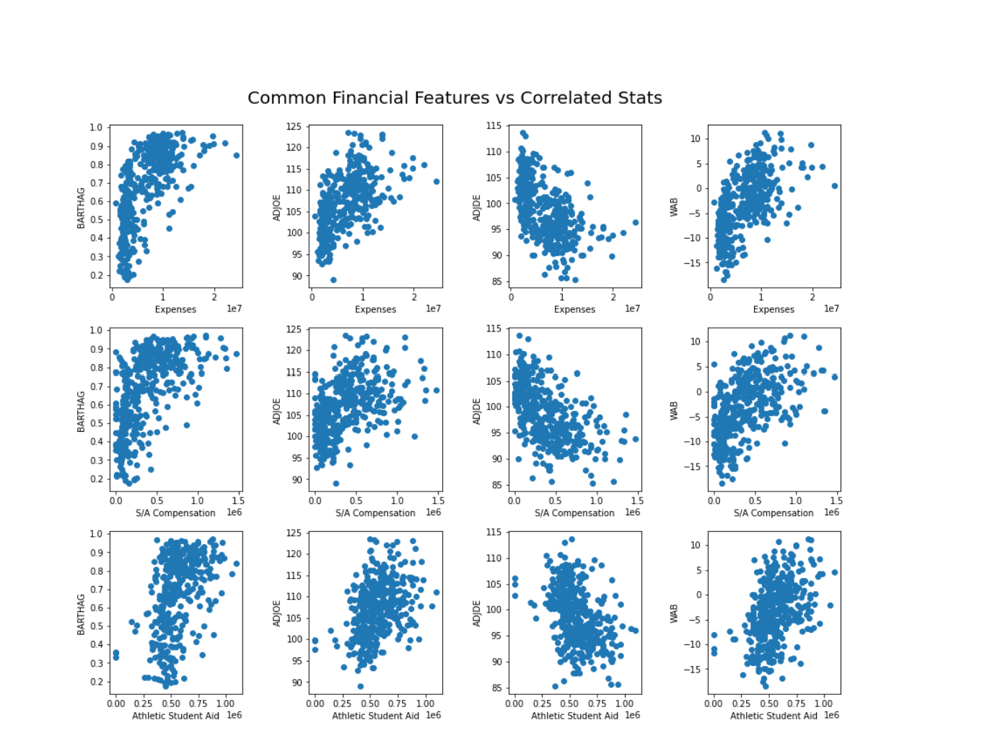

Jason Guo, Michael Oh-Yang, Matthew Sherman, Jiale Zheng
Georgia Institute of Technology, College of Computing
CS 4641 Machine Learning
Dr. Mahdi Roozbahani
It's easy to throw money at a problem, but where should you invest it to maximize the likelihood of winning a national championship? To answer this question, we analyzed two large datasets to discover correlation(s) between NCAA Men's Basketball game performance and the amount each university allocates into specific athletic expenditures. A prior study examined the "impact of athletic expenditure on athletic performance" among NCAA Division I Institutions (Beaudin, 2017). With expenses increasing annually, it's more important now, than ever, for universities to best distribute athletic funding to best improve performance. Essentially, there exists a positive feedback loop of "spending leads to athletic success which in turn leads to institutional benefits" (Suggs, 2003).
Division I universities invest millions each year into their men's basketball teams, with spending ranging from updating facilities to bidding for athletes with scholarships. Annual athletic expenditures are created to maximize the likelihood of winning a national championship, but there's no definite answer as to where investments will make the largest impact. Through understanding the relationship between expenditure categories and team performance, we can better inform teams on where to best invest their money to have the greatest return on investment.
Our dataset was created from datasets sourced from Kaggle and Sportico. The dataset sourced from Kaggle consists of 9 tables tracking team statistics such as games won, adjusted offensive efficiency, effective field goal percentage shot, etc. The dataset sourced from Sportico tracks team expenses in various categories such as total expenses, support / administrative staff compensation, athletic student aid, game expense, direct overhead, etc., across 4 years. Combining the team performance statistics from the Kaggle dataset and the athletic expenditure categories from the Sportico dataset allowed us to have a holistic dataset to examine the relationship between overall team performance based on athletic expenditure categories.
To match the financial and team statistics, we had to clean our dataset to better fit our data. Our tables were trimmed of non-numeric data, such as team names, which conference a team competed in, etc. We also had to homogenize data for years where we did not have a complete set of financial data for all the teams for which we had stats for, as well as expenses that were not reported. In addition, the team performance statistics did not track the same set of features across the 2018 to 2021 season. To combat this, features that were not shared between all of our tables, for each season between 2018 to 2021, were trimmed out. In one notable case, we removed the data regarding placement in the national championship tournament since the championship tournament (March Madness) did not happen in the year 2020. We discarded the prospect of estimating tournament placement for that year as it seems to be a formidable research problem in its own right. Our goal remains to examine the impact of financial investment across various athletic expenditure categories to effective team performance.
Having collected and cleaned our data, we continued to preprocess our data so that we could find the best correlation between measures of athletic expenditures and measures of team performance. We created a feature, Win Percentage, that was calculated for each team and year by dividing the number of wins by the number of games that particular team played. This is relevant as teams that ranked higher had opportunities to play more games than a lower ranked team. The nature of how NCAA D1 works could skew our data in the sense that playing more games gave room for more wins; however, playing more games would equate to playing against more difficult opponents. We sought to avoid reliance on this unsteady wins value with the addition of Win Percentage (wins/games). We anticipate this factor to be an important element in demonstrating the effectiveness of financial investment in a basketball team. We then went on to pair athletic performance data with the corresponding financial data for each team and year. Finally, before moving on to learning methods, we normalized the data to aid processing. Lastly, we implemented backwards feature selection to help us discover which features (athletic expenditure categories) would help us best predict effective team performance (see more under Methods). The primary approach taken to find was to directly compare financial investment in each category to each game stat. However, due to the incompleteness of the dataset from sportico, there were many underreported values.
Win/Games: Ratio of wins to games ADJOE: Adjusted Offensive Efficiency (An estimate of the offensive efficiency (points scored per 100 possessions) a team would have against the average Division I defense) ADJDE: Adjusted Defensive Efficiency (An estimate of the defensive efficiency (points allowed per 100 possessions) a team would have against the average Division I offense) BARTHAG: Power Rating (Chance of beating an average Division I team) EFG_O: Effective Field Goal Percentage Shot EFG_D: Effective Field Goal Percentage Allowed TOR: Turnover Percentage Allowed (Turnover Rate) TORD: Turnover Percentage Committed (Steal Rate) ORB: Offensive Rebound Rate DRB: Offensive Rebound Rate Allowed FTR : Free Throw Rate (How often the given team shoots Free Throws) FTRD: Free Throw Rate Allowed 2P_O: Two-Point Shooting Percentage 2P_D: Two-Point Shooting Percentage Allowed 3P_O: Three-Point Shooting Percentage 3P_D: Three-Point Shooting Percentage Allowed ADJ_T: Adjusted Tempo (An estimate of the tempo (possessions per 40 minutes) a team would have against the team that wants to play at an average Division I tempo) WAB: Wins Above Bubble (The bubble refers to the cut off between making the NCAA March Madness Tournament and not making it) Expenses: Overall and miscellaneous expenses Athletic Facilities: Money spent on athletic facilities specifically for Basketball Coaching Salaries: Salaries and bonuses for coaches Equipment and Supplies: Money invested in equipment and supplies for the basketball team Support / Administrative Staff Compensation: Salaries and bonuses for support and administrative staff Athletic Student Aid: Money spent on financial aid for athletes Athlete Meals: Money spent on food in the university (not outside food) Recruiting: Money spent on recruiting students Game Expenses: Money spent on running games Direct overhead: Money that is needed to keep a team and everything running Sports camp: Money invested in running a sports camp for the athletes
Our group focused on the supervised learning method of linear regression. Our research goal involves identifying specific financial features that had the greatest effect on measures of athletic performance, so we determined that feature reduction was an essential part of our model. Two procedures of feature reduction and linear regression were considered. The first was backward elimination of features followed by a cross-validated ridge regression model trained on the resulting reduced group of features. The second was a direct application of cross-validated lasso-reduction in order for the reduced and relevant features to be selected automatically.
To best use the data, backward elimination was used to choose the financial features that were most impactful. This also helped in getting rid of factors that were too skewed due to the excessive underreporting as mentioned previously. Using a significance level of 0.05 (95% confidence), we first fit a full model including all the features, and then iteratively remove the feature with the highest p-value that is greater than the significance level, fitting a new model without the removed feature each time. Running backward elimination with the financial features as X against each athletic statistic one by one, we get that for each of the team statistics, we keep the following features:
Although using pure Linear Regression would have almost certainly produced a model which more closely matches our data more precisely, we decided to utilize a cost function, such as the L²-norm penalty in Ridge Regression, in order to avoid overfitting. Again, we used the reduced set of financial features used above in order to more easily observe the effect of what we identified as the most influential variables. Finally, the scikit method we used, RidgeCV, includes cross-validation. This allowed us to identify an alpha coefficient which more closely maximizes the accuracy of our Ridge Regression model.
As an alternative to the two methods utilized above, we used Lasso Regression to perform both tasks, feature reduction and linear regression. The L¹-norm penalty tends to produce a model with many coefficients of value 0. This operates similarly to the backwards feature selection performed above, resulting in a selection of a subset of features with nonzero coefficients used in the model. Again, with the scikit built-in cross-validation of LassoCV we were able to select a value of the alpha coefficient that helped maximize the accuracy of our model. Running Lasso regression resulted in the following relevant features (those with nonzero coefficients):
The last method we utilized is Support Vector Regression, a model that applies the techniques of Support Vector Machines to a regression task. This was chosen because, with the proper kernel, the model can capture nonlinear relationships between the financial data and the athletic performance data. The possibility of nonlinearity was a feature ignored by our previous models, both of which were purely linear regression models. Unlike our other regression models that try to minimize the mean squared error for all data points, the SVR uses support vectors, which means utilizing a subset of the training data; this can help the model generalize. In our implementation of the model we used the radial basis function kernel because it is a non-linear kernel that works well with our data. On an important note, this choice of kernel eliminates the possibility of an easily interpretable model. If this model shows startling improvement, we will have to question the effectiveness of an understandable model.
The two approaches to creating a linear regression model were effective to a high degree of similarity. Even though our models weren't effective at predicting win percentage, as it turns out, each was effective at predicting other measures, including Barthag, ADJOE, ADJDE and WAB. These were predicted by our models with the average R-squared values of 0.46, 0.32, 0.37, and 0.41, respectively. Upon considering the implications, it makes a bit more sense as to why these statistics were more strongly correlated. The Barthag is a team's power rating as an estimate of that particular team's likelihood of winning against the average DI team. It's a value between 0 and 1, and the higher the better. Adjusted offensive efficiency (ADJOE) and adjusted defensive efficiency (ADJDE) are estimates of the corresponding offensive or defensive effectiveness, where the ADJOE is the points scored per 100 possessions against the average DI defense and the ADJDE is the points allowed per 100 possessions against the average DI offense. WAB is a unique statistic in that it measures a particular team directly against what a bubble team would be expected to perform. A "bubble team" is a term describing a team that qualifies for the NCAA March Madness Tournament, the national championship. This value is derived from examining how many more wins does a particular team have compared to the amount of wins that a bubble team would be expected to have if they faced up against the same schedule. Each of these measures is highly regarded as an effective predictor for success in NCAA basketball. Although we initially hypothesized that win percentage would be well predicted and be a useful measure of the positive effect of funding, these other two measures of athletic performance are similarly, if not more, useful when analyzing a team's effectiveness.

The backwards selection/ridge regression model selected five features and the lasso regression model selected four. Surprisingly, they only held three in common: Expenses, Support/Administrative Staff Compensation, and Athletic Student Aid. Their commonality suggests that they are the most useful predictors. Each is intuitively important for a basketball program, most obviously Expenses, but their unique significance asks for closer inspection. On the other hand, lasso regression alone considered Coaching Salaries, while the backwards feature selection process uniquely claimed the features Game Expenses and Direct Overhead Expenses. The fact that these models consider these different features yet perform exceedingly similarly seems to imply that these measures are either highly correlated or they add relatively little to the accuracy of the model. As the two models show wildly different predictions for less accurate categories (ORB and 3P_D, to name two), we hypothesize that they are in fact simply weaker indicators of athletic performance than the shared three features.
The SVR model indicates similar results in comparison with the Ridge Regression. We can see a similar trend in the high accuracy for features like ADJOE, ADJDE, and BARTHAG. If we direct our attention to the BARTHAG feature, we can see a significant improvement in accuracy. By utilizing the SVR model, we were able to improve the R-squared value by about 10 percent, which is very significant. For certain features, using the scikit package, we encountered negative r-squared values due to the poor performance of the model, however, these categories were also poorly predicted by our other models. Overall, this is important in showing that our more basic, interpretable linear models are similarly effective to a black-box model like SVR with a radial basis function kernel. The overall performance of the model demonstrated desirable results by showing consistency R-squared accuracy for each feature.
Athletic statistics exist to highlight a team's performance in comparison to the rest of the teams that competed that season. It would make sense from this perspective that any given team's overall effective performance can be measured from how well they stack up against their average opponent for that competitive season. Viewing this information through our research, it becomes more visible that athletic expenditures (specifically expenses, coaching salaries, support / administrative staff compensation, athletic student aid) are not simply numbers to be tallied off, in fact, many have a measurable impact on specific measures of performance. With the implementation of our models, we have illuminated important relationships between the distribution of funding and the effectiveness of an athletic program.